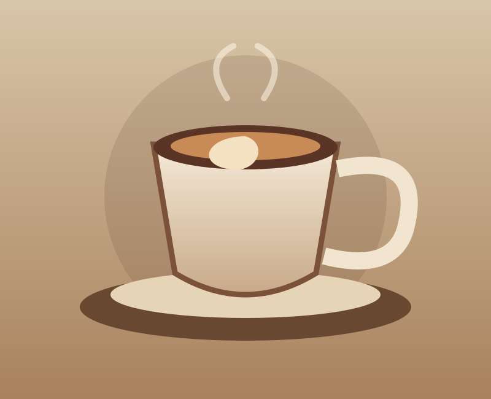
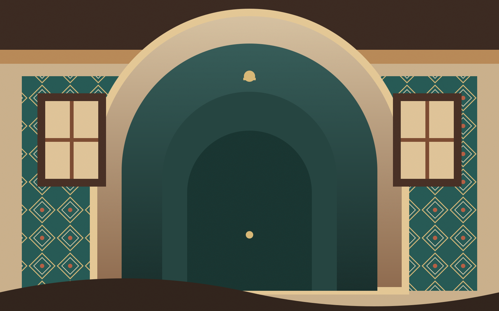
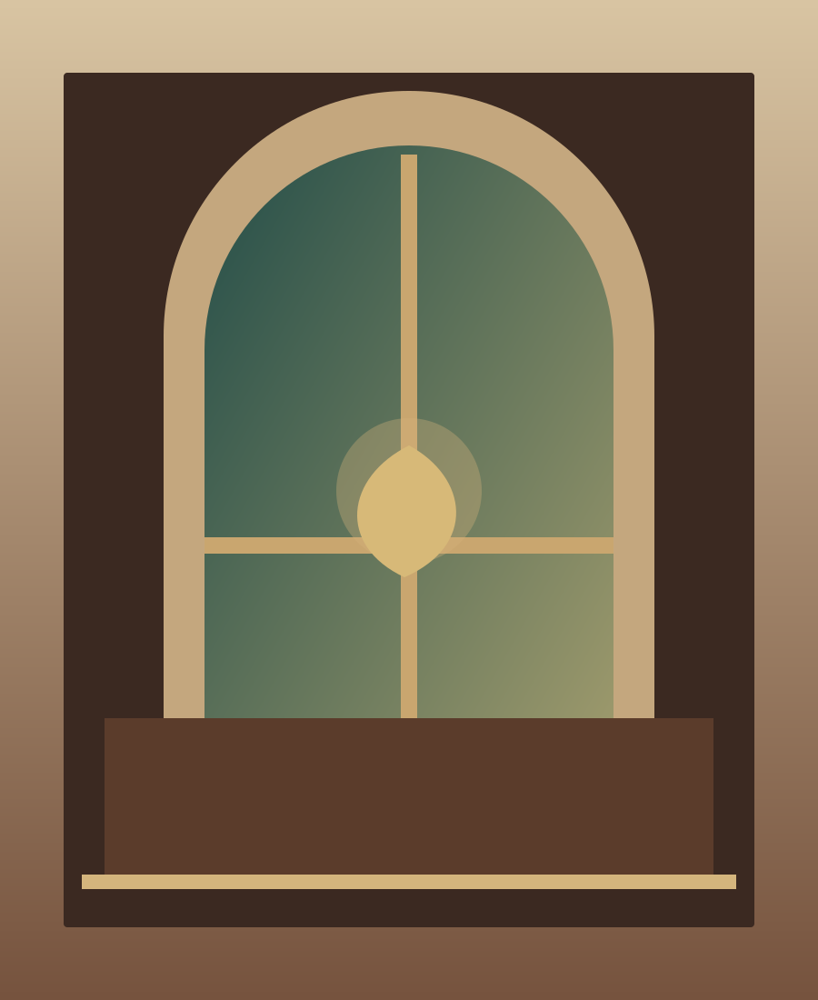

محبوبلاته نارون
اسپرسو، شیر بخار دادهشده
عطر قهوه تازه، ورق خوردن یک کتاب قدیمی و موسیقیای که انگار از خاطراتت میاد؛ به نارون خوش اومدی.


ما نارون رو ساختیم برای وقتهایی که دلت میخواد دنیا کمی آهستهتر بچرخه. جایی برای گپهای طولانی، قرارهای ساده، کتابهای نیمهتمام و فنجونهایی که زود خالی میشن.
اینجا هر گوشه یه خاطره داره؛ شاید خاطره بعدی، مال تو باشه.
منتظرتیم ←قهوهات رو بردار، یه گوشه بشین
و چند صفحه از جهان فاصله بگیر.
بزرگ علوی · رمان
عباس معروفی · رمان
نادر ابراهیمی · عاشقانه
الیف شافاک · رمان
یه پلیلیست کوچیک برای وقتهایی که حرفی برای گفتن نیست و موسیقی همهچیز رو میفهمه.
یه سر بیا، قهوه با ما. حرفها با تو.